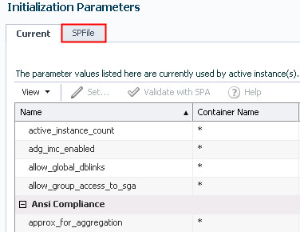
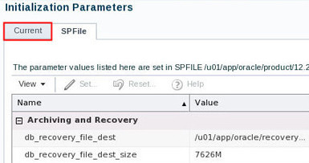
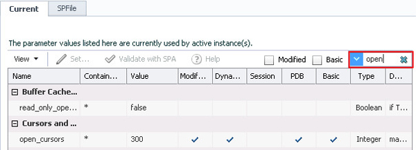
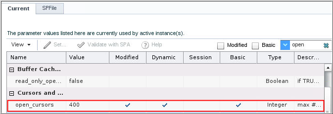
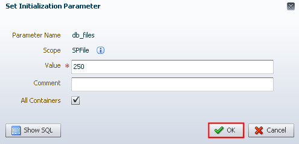
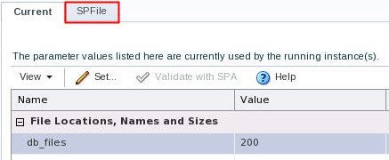
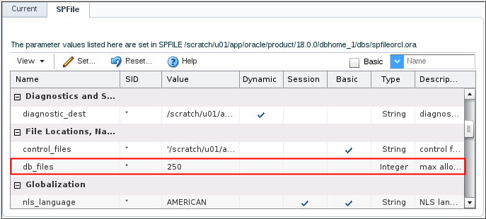

This 15-minute tutorial shows you how to view and modify
initialization parameters.
Select the Oracle Database release:
Background
An Oracle database system consists of an Oracle database and an
Oracle instance. An Oracle instance (also known as a database
instance) contains the set of Oracle Database background
processes that operate on the stored data and the shared
allocated memory that those processes use to do their work. In
this tutorial you learn how to manage your Oracle Database
instance.
What Do You Need?
Oracle Database 18c19c
View
and Modify the Initialization Parameters
The properties of an Oracle instance are specified using
instance initialization parameters. When the instance is
started, an initialization parameter file is read, and the
instance is configured accordingly. To view the values of the
initialization parameters by using Enterprise Manager Database
Express, perform the following steps:
Note:Starting with Oracle Database 19c,
Oracle EM Express, the default management option for Oracle
Database, is based on Java JET technology. Currently, only the Performance menu is available in the 19c JET version. Therefore, we
are using the 18c Flash Oracle EM Express in our tutorials. Use the following
command to revert to Flash Oracle EM Express:
SQL> @?/rdbms/admin/execemx emx
To return to 19c JET Oracle EM Express, use the following
command:
The Initialization Parameters page is displayed. The Current
tab shows the parameter values that are in use. Click the SPFile tab to view
parameters in the server parameter file.

Description of the
illustration a4
The SPFile tab of the Initialization Parameters page shows
the parameter values in the server parameter file. The server
parameter file is a binary file that can be written to and
read by the database and is the recommended format for the
initialization parameter file. Click Current
to return to the Current tab.
 Description
of the illustration a5
To change the value of OPEN_CURSORS, search for the
initialization parameter by entering "open"
in the search window.
 Description of the illustration a6
The Current tab shows that the updated value of open_cursors
as 400 in the server parameter file. When the instance is
restarted the new value will be used.  Description of the illustration a10
Note that the only scope for this initialization parameter
file is SPFile. This is a static initialization parameter and
the value in the running instance cannot be changed. You must
restart the instance for the new value to take affect. Enter 250 in the Value field and
click OK.
 Description of the illustration a13
Note that the value for db_files for the running instance is
still set to 200. Click the SPFile tab.
 Description of the
illustration a15
The db_files value in the server parameter file is set to
250. When the instance is restarted the new value of 250 will
be used.
 Description of the illustration a16
 View
and Modify the Initialization Parameters
View
and Modify the Initialization Parameters Before You Begin
Before You Begin View
and Modify the Initialization Parameters
View
and Modify the Initialization Parameters